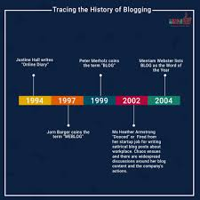

Main articles: History of blogging and online diary
The modern blog evolved from the online diary, where people would keep a running account of their personal lives. Most such writers called themselves diarists, journalists, or journalers. A few called themselves "escribitionists". The Open Pages webring included members of the online-journal community. Justin Hall, who began eleven years of personal blogging in 1994 while a student at Swarthmore College, is generally recognized as one of the earliest bloggers,[5] as is Jerry Pournelle.[6] Another early blog was Wearable Wireless Webcam, an online shared diary of a person's personal life combining text, video, and pictures transmitted live from a wearable computer and EyeTap device to a web site in 1994. This practice of semi-automated blogging with live video together with text was referred to as sousveillance, and such journals were also used as evidence in legal matter.
While the term "blog" was not coined until the late 1990s, the history of blogging can be traced back to several digital precursors. Before "blogging" became popular, digital communities took many forms, including Usenet, commercial online services such as GEnie, BiX and the early CompuServe, e-mail lists[1][2] and Bulletin Board Systems (BBS). In the 1990s, Internet forum software, such as WebEx, created running conversations with "threads". Threads are topical connections between messages on a metaphorical "corkboard". Some scholars[specify] have likened blogging to the Mass-Observation project of the mid-20th century.